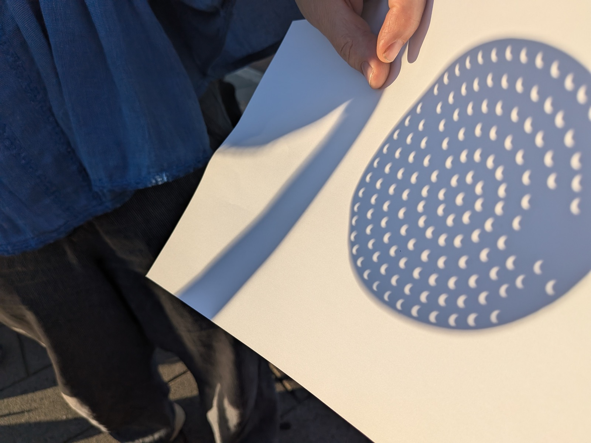
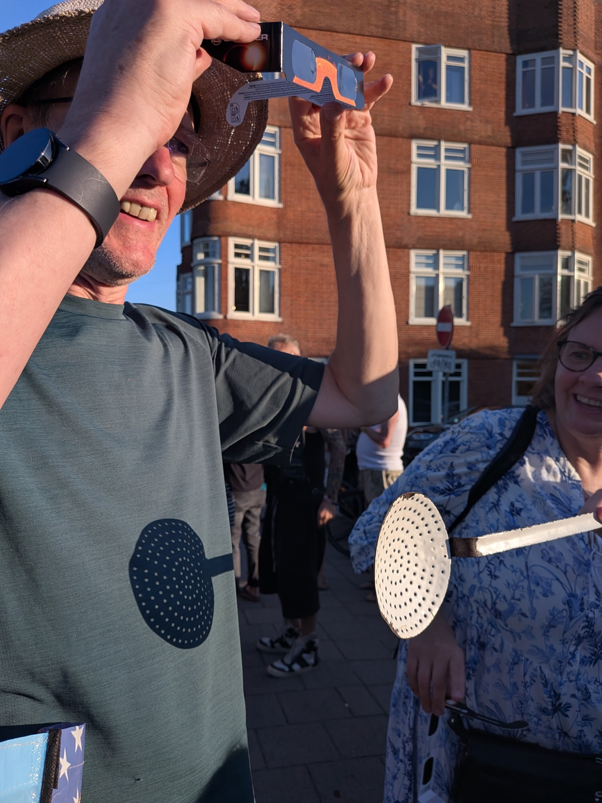

Amsterdam, twenty-seven years and a day
Amsterdam in August is two cities. The Dutch have gone to France, and the centre has been handed over to visitors, which these days tells you nothing about the month. It did once. A few tram stops east it is a different arrangement entirely. Oost is still going about its business, the terraces are full of people who live there, and the streets belong to whoever is walking on them.
We came here for the first time in 1999, from Stockholm. I knew almost nothing about the place. A few visits, and Camus, who had arranged the canals into the rings of hell and put the respectable citizens in the middle of them. That was the extent of my research.
On the eleventh of August that summer, at half past twelve, I was walking home along Rustenburgerstraat, in de Pijp, when it occurred to me that the light had been going thin for some time. Under the trees the pavement had filled with small crescents, hundreds of them, every gap between the leaves working as a pinhole and printing its own eclipsed sun onto the bricks. Nobody had told me a street could do that. If you are ever under trees during an eclipse, look down rather than up.
De Pijp is the dense one, nineteenth-century housing put up fast and cheap for workers and now among the most sought-after in the country. It was a particular era to land in. Public money for the arts, the squats, the hacker scene, politics still argued in rooms and streets. Barcelona was doing something similar. Berlin was about to start. That period is over, but the city has had many of them, and something of it stays in the brickwork. Ours ran on roughly the same schedule. There were dark stretches as well. Those are less advertised. Perhaps they should stay that way.
Years later we moved west. Amsterdam blocks are built around interior gardens, belonging to the ground-floor flats, but the rest of the block gets them as a view, which is a fair enough deal. Our bedroom looked onto it, over a balcony. Both our children were born in that room. One winter Sunday, cold and bright and completely empty, I cycled across the city with a blood sample of the first one in my bag, hours old.
If you want a small thing to look for here, look for the parakeets. Green all over, descended from escaped pets, now several thousand of them in the parks and the block gardens. In winter, when the trees are bare, they are the only colour left in the frame.
That is what I was looking at on that balcony one February morning, sitting out in the cold while my mother had a cigarette. She had come for Christmas and mentioned a headache, and had then spent two months in a hospital where nobody spoke her language, so her only interpreter was me, on visits. She had just been let out. That morning I had to tell her she had months. She took a pull on the cigarette and said she was not afraid to die. What else do you say to your child. She was fifty-one. She was not ready at all, which became clear later.
Twenty-seven years and a day after the crescents on Rustenburgerstraat, we are back to help that same first child move to Finland, after five years of studying and working in this city. On Saturday she leaves it, as we did, now almost two decades ago.
There was an eclipse again this evening, and we walked over the Amstel to watch it from the Amstelkanaal, where the water gives you the low western sky that the streets do not. It arrived late, most of the sun covered, the whole thing sitting a few degrees above the rooftops. Nothing was printed on the pavement this time. The light was coming in sideways.


The light over this city will go thin again. Other trees by then, probably.